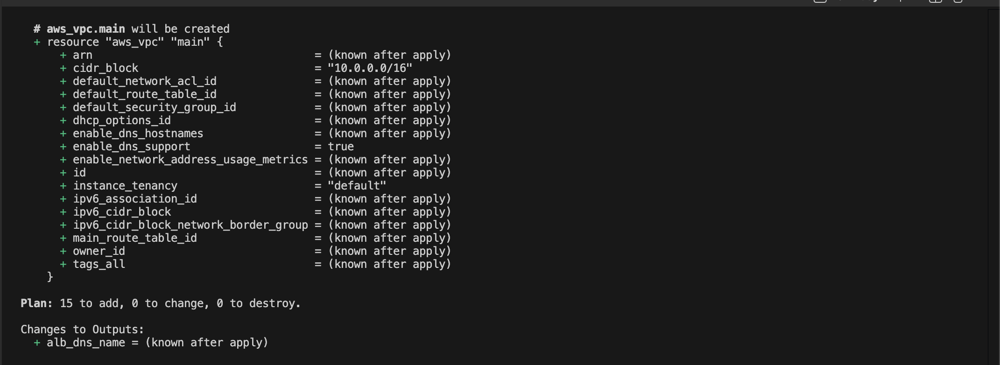
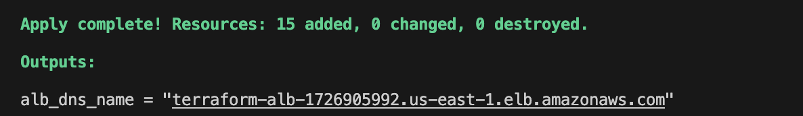

provider "aws" {
region = var.aws_region
}
data "aws_ami" "amazon_linux" {
most_recent = true
owners = ["amazon"]
filter {
name = "name"
values = ["amzn2-ami-hvm-*-x86_64-gp2"]
}
}
resource "aws_security_group" "web_sg" {
name = "web-sg"
ingress {
from_port = var.server_port
to_port = var.server_port
protocol = "tcp"
cidr_blocks = ["0.0.0.0/0"]
}
egress {
from_port = 0
to_port = 0
protocol = "-1"
cidr_blocks = ["0.0.0.0/0"]
}
}
resource "aws_instance" "web" {
ami = data.aws_ami.amazon_linux.id
instance_type = var.instance_type
vpc_security_group_ids = [aws_security_group.web_sg.id]
user_data = <<-EOF
#!/bin/bash
echo "Hello from Terraform" > index.html
nohup busybox httpd -f -p ${var.server_port} &
EOF
}
variable "aws_region" {
default = "us-east-1"
}
variable "server_port" {
default = 8080
}
variable "instance_type" {
default = "t2.micro"
}
The variables remove hardcoding. The region controls deployment location, the port defines where the server runs, and the instance type balances cost and performance. Defaults were chosen to be simple, widely supported, and free-tier friendly.
---data "aws_availability_zones" "all" {}
resource "aws_lb" "alb" {
name = "terraform-alb"
load_balancer_type = "application"
subnets = aws_subnet.subnets[*].id
security_groups = [aws_security_group.alb_sg.id]
}
resource "aws_lb_target_group" "tg" {
port = var.server_port
protocol = "HTTP"
vpc_id = aws_vpc.main.id
}
resource "aws_lb_listener" "listener" {
load_balancer_arn = aws_lb.alb.arn
port = 80
default_action {
type = "forward"
target_group_arn = aws_lb_target_group.tg.arn
}
}
resource "aws_launch_template" "web" {
image_id = data.aws_ami.amazon_linux.id
instance_type = var.instance_type
}
resource "aws_autoscaling_group" "asg" {
min_size = 2
max_size = 5
desired_capacity = 2
}
The ALB distributes traffic across instances created by the Auto Scaling Group. The launch template defines how each instance is built. Traffic flows from the ALB to the target group, then to the instances.
---

After deployment, the ALB DNS name was retrieved using terraform output. Accessing the URL returned the expected web page, confirming that traffic was correctly routed through the load balancer.
The DRY principle (Don't Repeat Yourself) means avoiding duplication. Using variables removed repeated hardcoded values like ports and instance types. In a team setting, hardcoding would lead to inconsistent configurations and difficult maintenance.
---The configurable setup used a single EC2 instance, making it simple but fragile. The clustered setup introduced an Auto Scaling Group and Load Balancer, improving availability and allowing the system to handle more traffic without failure.
---The data block allowed dynamic fetching of AWS information instead of hardcoding values. This was used to retrieve availability zones, making the deployment more flexible and portable.
---This lab moved from deploying a single server to building scalable infrastructure. It highlighted how Terraform can manage environments.